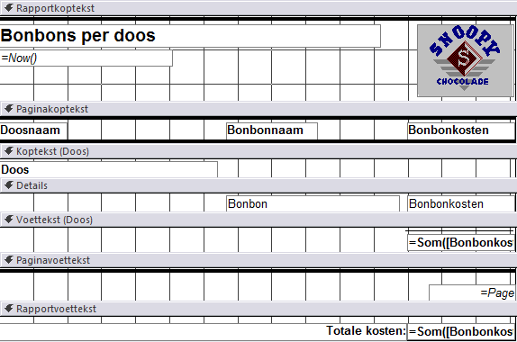

Taak: Rapport verkennen
De weergavemogelijkheden van rapporten.
Met rapporten kun je de informatie uit de tabellen mooi opgemaakt op het scherm tonen of op papier afdrukken. De getoonde gegevens kunnen afkomstig zijn uit meerdere tabellen en/of query's. Ook berekende waarden zijn mogelijk. Verder kun je een rapport opmaken met titels, kopjes en kop- en voetregels.
De belangrijkste weergaven van een rapport zijn:
- Rapportweergave. In deze weergave kun je de inhoud van het rapport zien.
- Afdrukvoorbeeld. De weergave van het rapport wanneer deze wordt afgedrukt.
- Ontwerpweergave. In deze weergave kun je het ontwerp van het rapport zien en deze aanpassen.
-
Zet het rapport Bonbons per doos in de
Ontwerpweergave op een van de volgende
manieren:
- Klik op de knop Ontwerpweergave rechtsonder in
het programmavenster

- .
Tip: Je kunt het rapport ook direct in de Ontwerpweergave openen via een rechter muisklik op de rapportnaam in het navigatiedeelvenster en dan uit het snelmenu te kiezen voor Ontwerpweergave.Figuur 2. Rapport Bonbons per doos in Ontwerpweergave In deze ontwerpweergave lijkt het rapport veel op een formulier en kun je het rapport opmaken en besturingselementen toevoegen zoals tekstvakken, labelvakken, keuzelijsten, aankruisvakjes, enz.
- Klik op de knop Ontwerpweergave rechtsonder in
het programmavenster